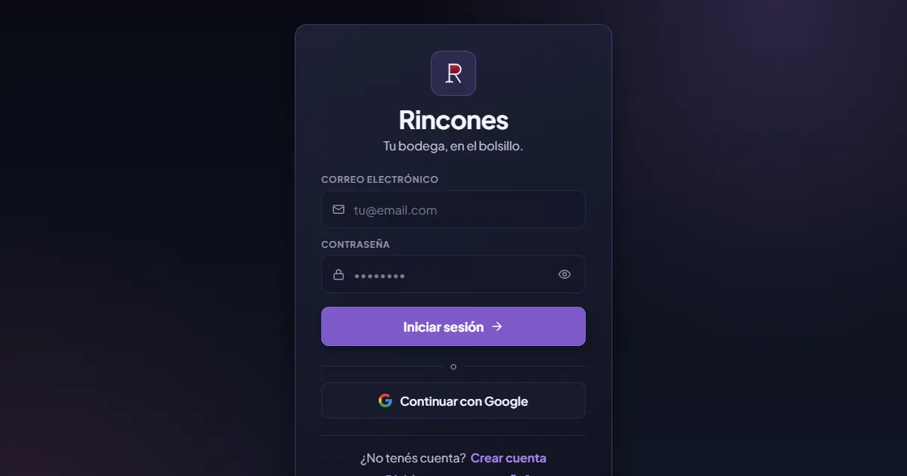

Rincones
A wine cellar app that catalogues a personal collection by reading the label from a photo.
- The problem
- Cataloguing a collection means typing every label by hand.
- What I built
- A full-stack app with user accounts and an admin area, installable like a native app.
- What makes it interesting
- Google Gemini reads the label and pre-fills the entry, with a local OCR fallback so the feature keeps working if the AI call fails.
React · TypeScript · Node.js · MongoDB · Gemini API